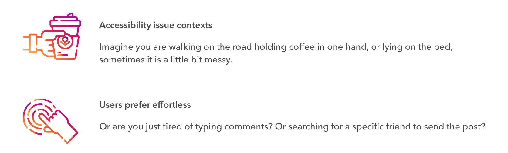

Overview.
| Role | Interaction Designer |
| Duration | Design Challenge (Nov.10 - Nov.11, 2018) |
| with Fred Liu | |
| Tag | Voice User Interface. Motion Design. |
| Tool | Sketch. Principle. Final Cut Pro. |
Challenge.
When you try to type comments or forward a post to a friend in the Instagram:
Video.
Understanding.
Design prompt.
Our design origins from a rough data analysis of people’s experience in the post stream of Instagram. We find that comment and forward are all light features.
Comment and foraward are all light features.

Interview.
We conducted interviews for 5 Instagram users to dig more into this phenomenon and find the opportunities. And the findings are below:
Tapping on the screen to comment sometimes is difficult when a hand is occupied or the screen is too small.
Accessibility issue contexts.
The effort that users currently devote on two features are already light enough. But users never satisfied and they always want easier ways to finish their task.
Users prefer effortless.

Competitive analysis.
One major issue for voice interaction is ‘discoverability’. So we conducted a competitive analysis to summarize current voice entrance and interactions used to start the conversation in social media and voice assistant tools.
Entry of voice
Most voice interaction only have one access, which is for the whole system, instead of multi access locating to different parts of the system.
Interactions to start the conversation

Design criteria.
Accessibility
Applicable for people with physical impairments or under certain contexts. Provide voice input or large area of touch.
Effortless
Minimal effort to comment simple words, @ in comment and forward a post.
Design
How many voice entrances?
Our target is to minimize workload for users. So we chose the one with fewer steps, which is to provide multiple accesses under each post.
Where is the voice entrance?
As our user scenarios are mainly for “accessibility contexts”, we chose the one with larger touch area. At the same time, “interaction should involve indication of what actions users are doing(such as indication of whether they are making a comment or sharing the post to a friend)” should also be put into consideration for further design.
Use what gesture to start voice interaction?
Right now in the post stream of Instagram, gestures for image include: Tab for people tagged in the post and double Tab to like the post. So we are thinking using “long press” as the voice input.
User flow.

Design outcome.
Use voice interaction to enjoy your quicker communication with Instagram.
Just long press the post to start.
Add a comment.
Directly long press the post and say ‘I love the outfit’ to add the comment. Emoji will also be automatically generated based on sentiment analysis of the recognized texts.
@ a friend in the comment.
Directly say ‘@ Agrim’. If there are several ‘Agrim’s in your friend, we will provide you options. Just drag and drop to select, and it will add to your comment.
Send the post to a friend.
Directly long press the post and say ‘Send to Agrim’. Recognized friends will pop up, you can just drag and drop to select.